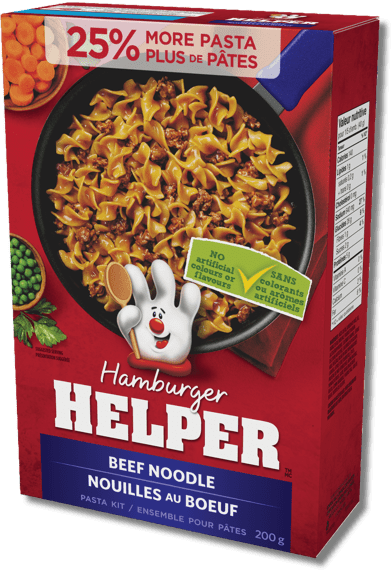

HamburgerHelper Recipe(Beef Noodle)

Description
HamburgerHelper is a pasta dish that is cooked with ground beef and the
noodles that they provide in the package. In the package they provide the
seasoning required to complete the dish and other then that all you need
is a littel bit of milk and water along with your ground beef and it is an
easy dinner cooked within 15min.
Ingredients
- Pasta
- Seasoning
- Corn Startch
- Salt
- Enriched Wheat Flour
- Onion Powder
- Modified Whey
- Caramel Colour
- Autolyzed Yeast Extract
- Potassium Chloride
-
High Monounsaturated Vegetable Oil (Canola, Soybean And Or Sunflower)
- Spices
- Hydrolyzed Corn Protein
- Natural Flavour
- Monoglycerides
- Sugar
- Beef Stock
- Annato
- Gum Acacia
- Garlic Powder
- Beef fat
- Silicon Dioxide
- Additional Ingredients
- Disclaimer
Steps
-
Cook ground beef in large nonstick skillet over medium-high heat, for 7
to 8 minutes, breaking into small chunks and stirring constantly until
browned.
- Stir in Sauce Mix and hot water until dissolved.
- Stir in milk and Pasta.
- Heat to boiling, stirring occasionally.
- Reduce heat, cover and simmer about 10 minutes, stirring occasionally, until pasta is tender.